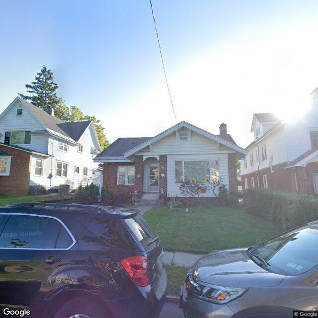

2026-08-07T11:18:19+00:00
245 Ross Pk
A single-story residential bungalow with a front gable, light-colored siding, and a brick accent wall, appearing in generally fair to good condition with a maintained front yard.
No open-data match yet
Open entry